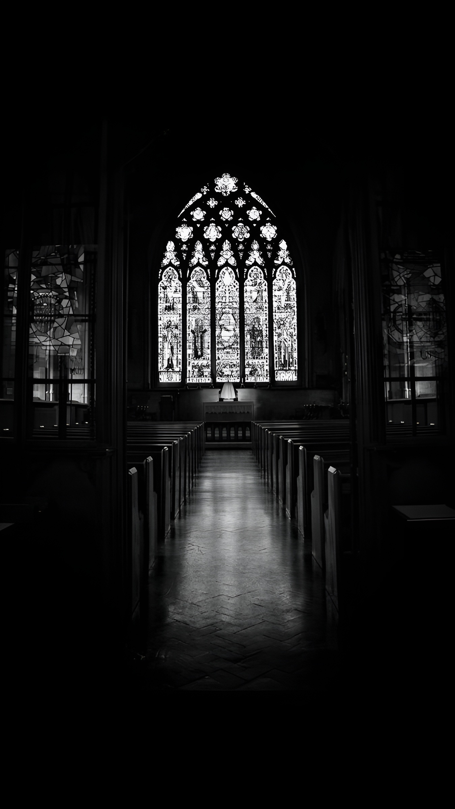

Dell'ombra
e del velo
Il corpo come rito, il tessuto come trascendenza
2027
Il corpo come rito, il tessuto come trascendenza
2027
01 / Concept
La collezione "Dell'Ombra e del Velo" è una linea ispirata al tema religioso, che reinterpreta le sacre vesti attraverso una visione contemporanea e misteriosa.
Il velo diventa il simbolo del confine tra ciò che si mostra e ciò che si cela, trasformandosi in drappeggi, sovrapposizioni e volumi che avvolgono il corpo, nascondendolo e al tempo stesso rivelandolo.
La collezione trasforma il gesto del vestirsi in un rituale contemporaneo, dove identità, mistero e sacralità del profano si intrecciano, dando vita a una narrazione sospesa tra ombra e rivelazione.
"Gloria Patri, et Filio, et Spiritui Sancto."

02 / Vision
03 / Lookbook


04 / Comunicazione
Il racconto si articola attraverso Instagram e YouTube, che fungono da strumenti integrati per la narrazione e la presentazione del progetto.
Instagram è dedicato alla diffusione dell'immaginario visivo della collezione, presentando editoriali, dettagli dei capi e contenuti di backstage (Teasing & Coinvolgimento).
YouTube ospita i contenuti video e i fashion film, offrendo una lettura immersiva e strutturata dell'identità del brand e del processo progettuale.